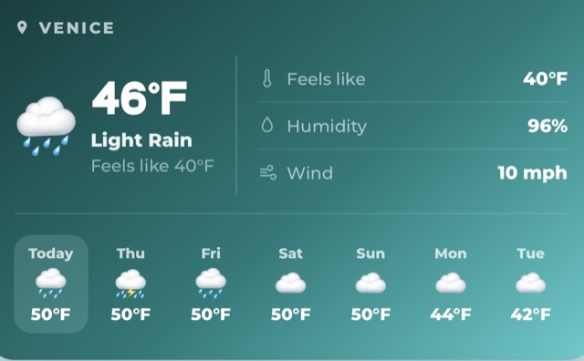
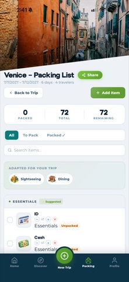

⛪ Churches & Cathedrals
🏙️ Cobblestone Cities
❄️ Northern Italy (Winter)
🏖️ Southern Italy & Coast
🧳 Pack Like a Local
A light cover-up lives in the day bag for the entire trip, not just the day you planned a church visit — it's enforced at major cathedrals everywhere, and you won't always know in advance which doors you'll want to walk through. Shoes are the other local tell: broken-in, with real grip for cobbles and worn marble, not anything new or thin-soled.
One good evening outfit gets worn on repeat rather than packed three times over — Italians dress well, but they repeat clothes too, and the space is better spent on a second pair of comfortable shoes.
🚫 What Not to Overpack
One smart-casual look, worn more than once, is normal.
A phone covers maps and hours; save the weight.
One good walking pair plus one evening pair outlasts a suitcase full of options.

A 6-day Venice trip gets a completely different list
A light rain layer for a wet July week, walking shoes worn daily, and a bag you can lift over a bridge — that's a real Venice trip, not the single generic "Italy" default this page assumes, because it's built from the actual forecast and activities for those exact dates.
And it doesn't stop once the list is made. If the acqua alta season moves in or the route shifts to Rome and Florence, the list adjusts instead of leaving the layer — or the cover-up — behind.
- Built from your real dates, not a generic "Italy" template
- Updates itself the moment your plans change
- Shared live with everyone else on the trip
Italy Packing FAQ
What should I wear to visit churches in Italy?
Covered shoulders and knees — it's enforced at major churches and cathedrals all over Italy, not just in Rome, and staff can turn you away even in mid-summer. The easy fix is a light scarf or cover-up that lives in your day bag: it weighs nothing and works at every church on the trip.
What shoes are best for Italy's cobblestones?
Broken-in walking shoes with real support and grip. Italy's old towns are wall-to-wall stone — cobbles, marble and worn steps, often polished smooth — and you'll walk for hours daily. New shoes or thin sandals will hurt by day two. Save the nice sandals for dinner, when you're walking ten minutes, not ten kilometres.
What do I pack for Italy in winter vs summer?
Winter splits by region: the north needs a warm coat, layers and a waterproof layer, while the south is often mild with just a good jacket. Summer is one list almost everywhere — light clothes, sun protection, a refillable bottle — plus the church cover-up, which matters most exactly when it's hottest. Spring and autumn sit between: layers, not one heavy coat.
Is northern Italy much colder than the south?
Yes, enough to change what you pack. In winter the north (Milan, Venice, the lakes) is cold and damp while Sicily and the south stay mild; in summer the south runs hotter and drier. A multi-region trip should be packed for the coldest and hottest stop, not the average of the two.
What should I pack for a multi-city Italy trip?
One base list that layers. The classic Rome–Florence–Venice run crosses climates and ends in a city of bridges and stairs, so choose a bag you can lift onto trains and carry, not just roll. In Packmates AI you can build the list from every stop and your dates, so the Venice layer doesn't get dropped because the trip started in sunny Rome.
This list, auto-built for your actual dates
Packmates AI generates a checklist like this one automatically for your exact destination, travel dates, and activities — from a database of 250+ packing items — then syncs it live with everyone else on the trip.
Try it free